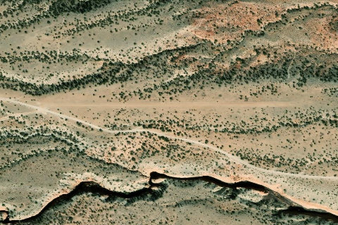

Eagle City (Eagle Benches South)
EAGLECITY · UT

Aerial imagery source: Esri, Vantor, Earthstar Geographics, and the GIS User Community
| Identifier | EAGLECITY |
|---|---|
| State | UT |
| Runway length | 1,973 ft |
| Runway width | 30 ft |
| Surface | Dirt |
| Runway | 9/27 |
| Elevation | 6,260 ft |
| Ownership | blm |
| CTAF | 122.9 |
| Coordinates | 38.08306, -110.69611 |
Notes
[ubcp] Description: Eagle City's runway is orientated east/west on the east face of the Henry Mountains. The east 500' is more rough and has a more rocky surface. Some errosion exists in the middle of the runway not quite halfway down from the east end. Larger rocks have been removed in recent years from users of the strip. Land west, depart east. Downdrafts on final can be common. Large rocks exist on the shoulders of the runway, so use caution when taxiing off of the runway surface. Runway: 1973' long x 30' wide dirt/clumpy grass strip in good condition. The strip has a 5.8% grade from the east to the west with a 115' gain in elevation over the length of the runway. Some errosion exists near midfield in the middle of the runway. The first 500' is a little more rocky and rougher. Large rocks and other hazards exist off the shoulders of the runway. Use caution when taxiing off of the runway. Approach Considerations: Land west, depart east. Uneven terrain in the area can cause irregurlar winds and downdrafts. Use caution on final. Use caution for density altitude, especially in the event of a go around. Amenities: Camping is available on the south side of the runway abeam the information sign. At least one rock fire ring was present. Windsock: Yes. One located on the south side of the approach end of runway 9, the other on the northside of the approach end of runway 27.